Tutorial. Part 3. Details¶
In this part of the tutorial we will explain how to work with details.
Let’s select the “Task/Groups” item in the project tree and and click the New button at the bottom right corner of the page:
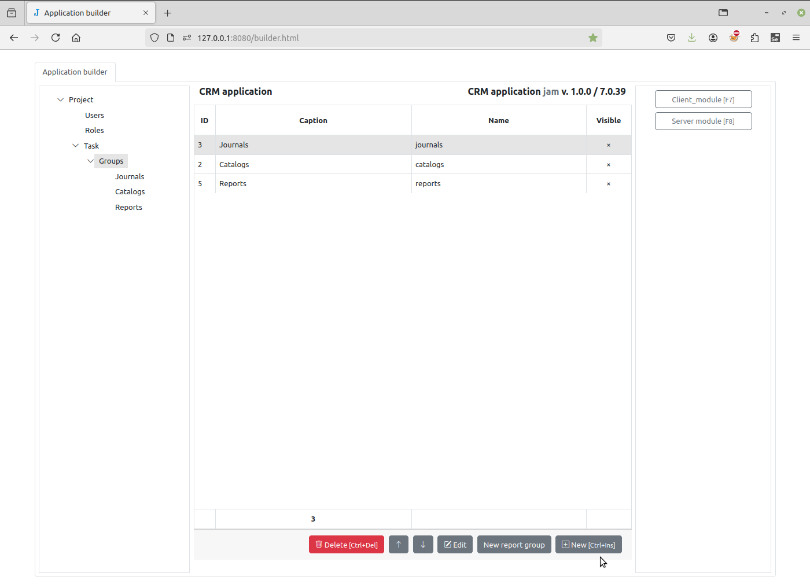{kind=link}
Name it “Details”:
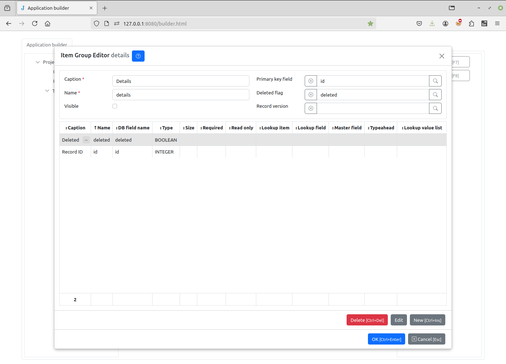{kind=link}
In the Item Editor dialog box, we will name the new item “To do list” and add the two fields “Created” and “To do” in the same way as in the previous tutorial:
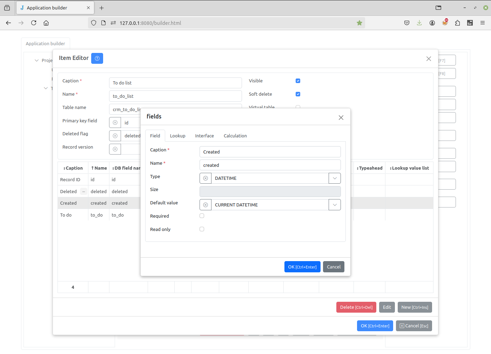{kind=link}
After saving the “To do list”, select the “Contacts” journal and click the Details button in the right pane to open the Details Dialog. Click the right arrow button to add the “To do list” to the “Contacts” details and the OK button to save changes.
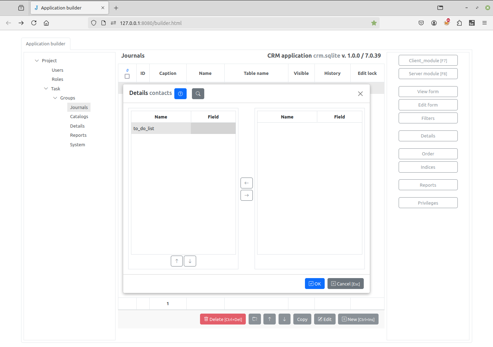{kind=link}
A new “To do list” item will be created as a child of the “Contacts” journal.
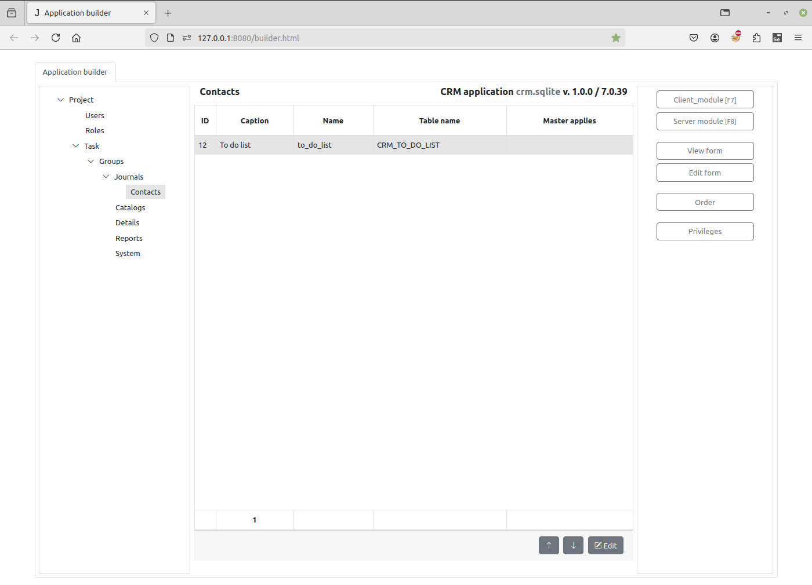{kind=link}
Select the “Contacts” journal again and click the Edit form button to open the Edit Form Dialog. Select Form tab, click the button to the right of the Edit details input and select the “To do list” check box.
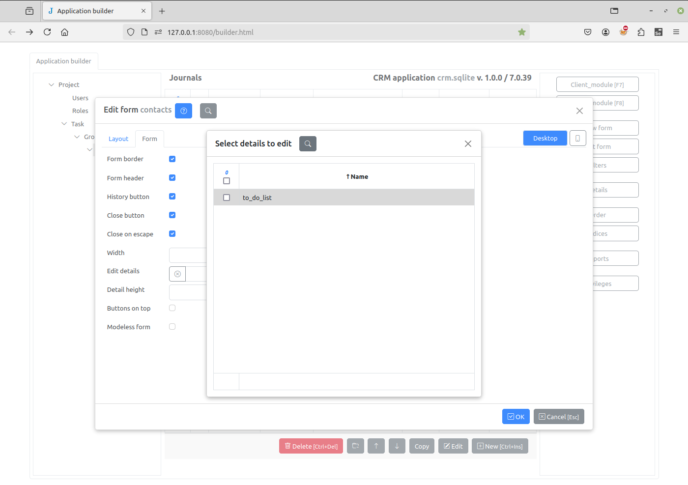{kind=link}
Let’s update the project page and dblclick on the contact. Now we can add items to the to-do list of the contact.
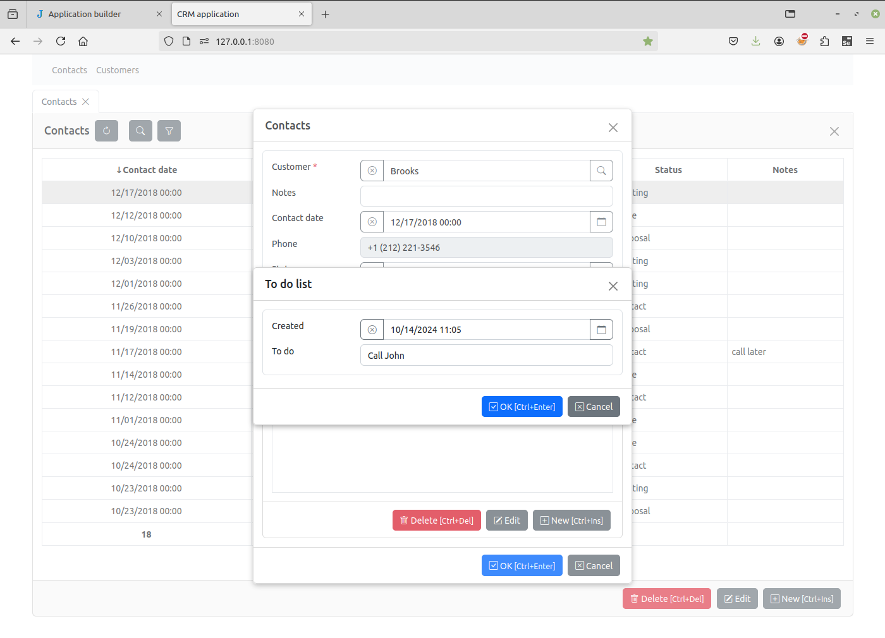{kind=link}
Click the Groups node in the project tree, dblclick the Details row and set Visible attribute to true.
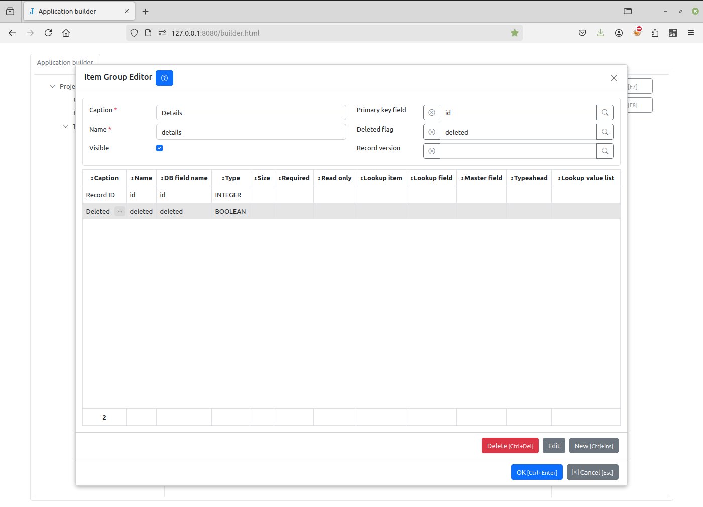{kind=link}
When we refresh the project page, we will see the “To do list” item in the main menu. Click on it to see the to do list of all contacts.
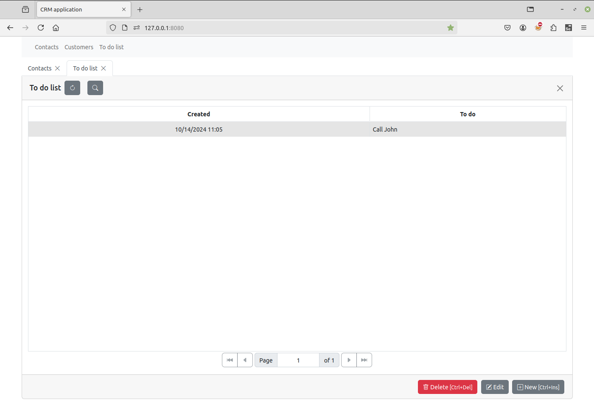{kind=link}
Select the “Contacts” journal again and click the View form button to open the View Form Dialog. Select Form tab, click the button to the right of the View detail input and select the “To do list” check box.
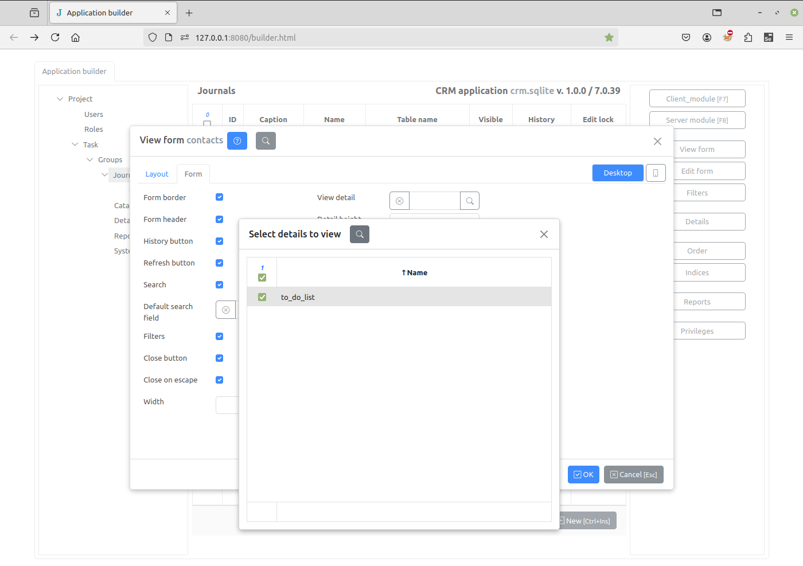{kind=link}
In the project page will see that the to-do list changes when the contact changes.
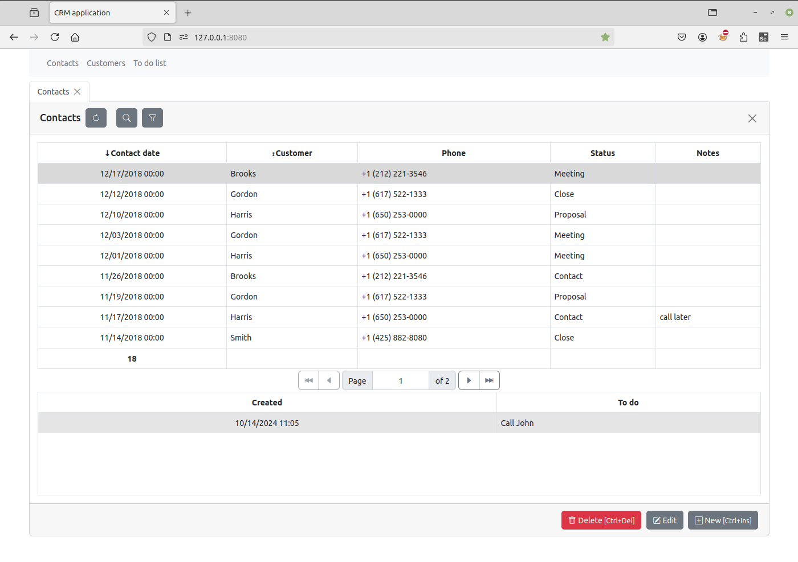{kind=link}